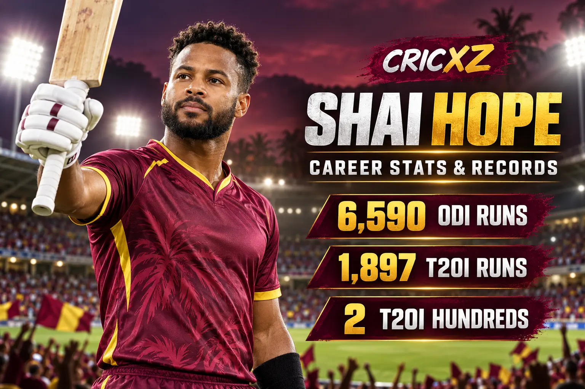
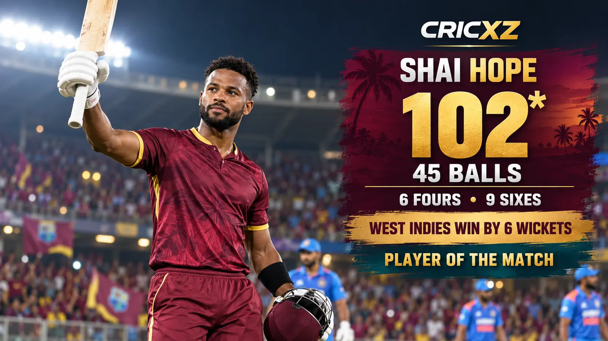

Test Career
- Matches
- 49
- Runs
- 2,518
- Batting average
- 27.98
- Strike rate
- 43.84
- Highest score
- 147
- Hundreds / Fifties
- 5 / 7

Shai Hope is one of the leading West Indies batters of his generation. The right-hander combines an elite ODI record with growing T20 power and led a record chase against India with an unbeaten 102 in Ranchi.
Career statistics are current through the second India–West Indies T20I on 9 October 2026.
Hope remains an active player, so these figures may change after his next appearance. The T20I snapshot includes his scores of 52 and 102* in the first two matches of the current series.
Hope built his reputation through patience, balance and consistency in ODI cricket. As West Indies captain, he has added greater intent to his white-ball game while retaining the control that made him one of the fastest players to major ODI run milestones.

Hope struck an unbeaten 102 from 45 balls against India in Ranchi on 9 October 2026. His innings contained six fours and nine sixes as West Indies chased 250 with nine balls remaining.
West Indies had slipped to 58/3 before Hope and Sherfane Rutherford added 120. Rutherford made 84 from 37 balls and Romario Shepherd finished with 34 from 13 as West Indies won the second T20I by six wickets and levelled the series 1–1. Hope was named Player of the Match.
Hope has combined volume with remarkable consistency in ODI cricket, scoring 6,590 runs with 21 hundreds while averaging above 50. His calm accumulation and ability to bat deep have made him the central figure in the West Indies 50-over batting order.
His leadership period has also featured greater range against spin and a stronger finishing game. Those developments have carried into T20 internationals, where the Ranchi century became the second hundred of his career.
1 May 2015
Made his Test debut against England at Bridgetown, Barbados.
16 November 2016
Made his ODI debut against Sri Lanka at Harare.
29 December 2017
Made his T20I debut against New Zealand at Nelson.
A prolific century-maker with more than 6,500 ODI runs.
Maintains one of the strongest batting averages in modern men's ODI cricket.
Scored centuries in both innings as West Indies beat England in 2017.
Produced his career-best T20I innings in the 2026 Ranchi chase.
Led West Indies to their highest successful T20I chase against India.
Leads West Indies in ODI and T20I cricket.
His twin hundreds powered a famous West Indies Test victory in England.
Selected in ICC men's ODI teams after outstanding calendar-year performances.
Won the award for his unbeaten 102 in a six-wicket victory over India.
Converted his expanding T20 game into two international hundreds.
Career statistics and recent-match details were checked on 10 October 2026.
Read the second-T20I match report from Ranchi, revisit India's series-opening victory, or browse all CricXZ player profiles.